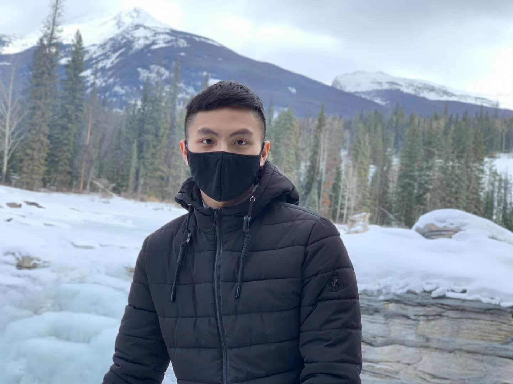

About Me
Hello! I am Kean. I am a 4th year Computing Science student currently studying at the University of Alberta. I love building and tinkering with things, nothing makes me happier than seeing the thing you built just work!
Professional History
Review Board / Open Source Developer
- Contributed 3 features using jQuery and Backbone.js to improve user experience and usability of thousands of companies and projects including Yelp, Twitter, VMware and Apache.
- Added UI features to accommodate company preferences and enforce coding standards when reviewing code diffs.
CNOOC International (formerly Nexen)/IT Co-op Student
- Involved in the development and implementation of the ServiceNow GRC module which contributed to the continuous improvement of the GRC function.
- Familiarized myself with different compliance, cybersecurity and ITSM frameworks by performing risk assessment and helping draft governance policies.
- Collaborated with Deloitte audit management during external audit engagement by collecting evidence and facilitating discussions.
What I Have To Offer
I am self-motivated and eager to learn whatever that is required to get the job done. I also try to keep up with the latest tools and technologies.
Relevant Skills
- Django, React, jQuery
- Python, C, C++